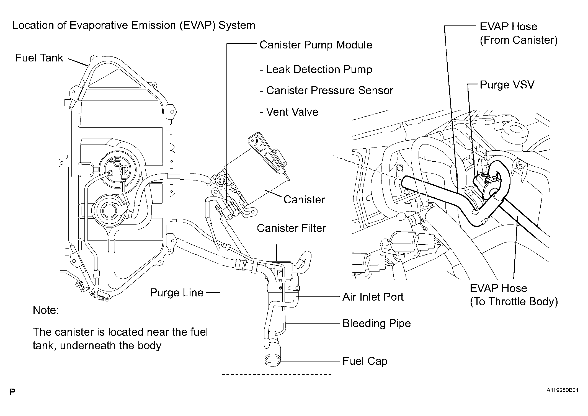
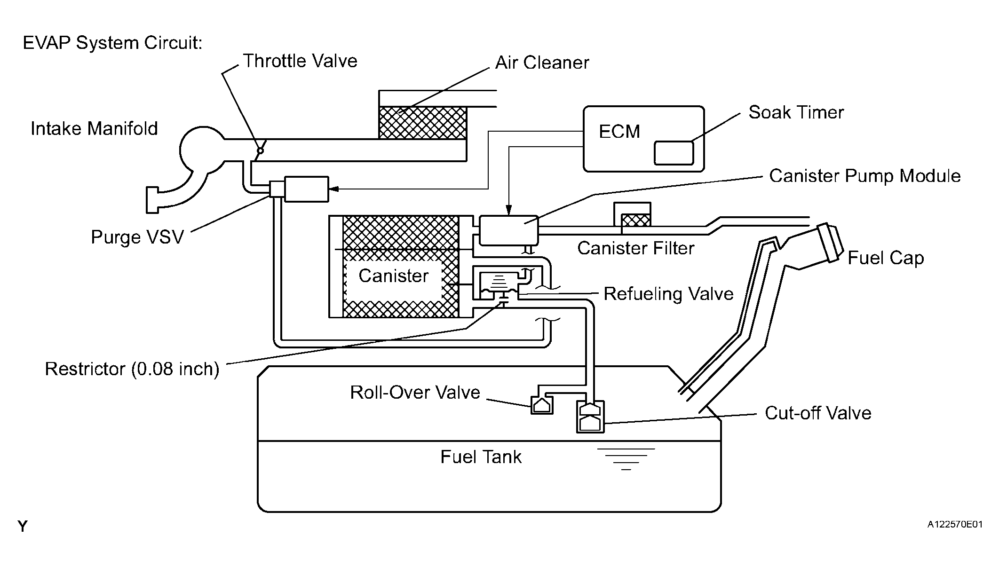

EVAP System: Description

Courtesy of © TOYOTA, LICENSE AGREEMENT TMS1002
Courtesy of © TOYOTA, LICENSE AGREEMENT TMS1002While the engine is running, if a predetermined condition (closed loop, etc.) is met, the purge VSV is opened by the ECM and stored fuel vapors in the canister are purged to the intake manifold. The ECM changes the duty cycle ratio of the purge VSV to control purge flow volume.
The purge flow volume is also determined by the intake manifold pressure. Atmospheric pressure is allowed into the canister through the vent valve to ensure that the purge flow is maintained when the negative pressure (vacuum) is applied to the canister.
The following 2 monitors run to confirm appropriate EVAP system operation.
- Key-off monitor
This monitor checks for Evaporative Emission (EVAP) system leaks and canister pump module malfunctions. The monitor starts 5 hours* after the ignition switch is turned OFF. More than 5 hours are required to allow the fuel to cool down to stabilize the Fuel Tank Pressure (FTP), thus making the EVAP system monitor more accurate.
The leak detection pump creates negative pressure (vacuum) in the EVAP system and the pressure is measured. Finally, the ECM monitors for leaks from the EVAP system and malfunctions in both the canister pump module and purge VSV, based on the EVAP pressure.
HINT:
*: If the engine coolant temperature is not below 35°C (95°F) 5 hours after the ignition switch is turned OFF, the monitor check starts 2 hours later. If it is still not below 35°C (95°F) 7 hours after the ignition switch is turned OFF, the monitor check starts 2.5 hours later.
- Purge flow monitor
The purge flow monitor consists of the 2 monitors. The 1st monitor is conducted every time and the 2nd monitor is conducted if necessary.
- The 1st monitor
While the engine is running and the purge Vacuum Switching Valve (VSV) is ON (open), the ECM monitors the purge flow by measuring the EVAP pressure change. If negative pressure is not created, the ECM begins the 2nd monitor.
- The 2nd monitor
The vent valve turned OFF (open) and the EVAP pressure is then measured. If the variation in the pressure is less than 0.5 kPa (3.75 mmHg), the ECM interprets this as the purge VSV being stuck closed, and illuminates the MIL and sets DTC P0441 (2 trip detection logic).
Atmospheric pressure check:
In order to ensure reliable malfunction detection, the variation between the atmospheric pressures, before and after conduction of the purge flow monitor, is measured by the ECM.
- The 1st monitor
| Components | Operations |
|---|---|
| Canister | Contains activated charcoal to absorb EVAP generated in fuel tank. |
| Cut-off valve | Located in fuel tank. Valve floats and closes when fuel tank 100% full. |
| Purge Vacuum Switching Valve (VSV) | Opens or closes line between canister and intake manifold. ECM uses purge VSV to control EVAP purge flow. In order to discharge EVAP absorbed by canister to intake manifold, ECM opens purge VSV. EVAP discharge volume to intake manifold controlled by purge VSV duty cycle ratio (current-carrying time) (open: ON; closed: OFF). |
| Refueling valve | Controls EVAP pressure from fuel tank to canister. Valve consists of diaphragm, spring and restrictor (diameter: 0.08 inch). When fuelvapor and pressure inside fuel tank increase, valve opens. While EVAP purged, valve closes and restrictor prevents large amount of vacuum from affecting pressure in fuel tank. Valve opens while refueling. |
| Roll-over valve | Located in fuel tank. Valve closes by its own weight when vehicle overturns to prevent fuel from spilling out. |
| Soak timer | Built into ECM. To ensure accurate EVAP monitor, measures 5 hours (+-15 min) after ignition switch OFF. This allows fuel to cool down, stabilizing Fuel Tank Pressure (FTP). When approximately 5 hours elapsed, ECM activates. |
| Canister pump module | Consists of (a) to (d) below. Canister pump module cannot be disassembled. |
| (a) Vent valve | Vents and closes EVAP system. When ECM turns valve ON, EVAP system closed. When ECM turns valve OFF, EVAP system vented. Negative pressure (vacuum) created in EVAP system to check for EVAP leaks by closing purge VSV, turning vent valve ON (closed) and operating leak detection pump (refer to Fig 4). |
| (b) Canister pressure sensor | Indicates pressure as voltage. ECM supplies regulated 5 V to canister pressure sensor, and uses feedback from sensor to monitor EVAP system pressure (refer to Fig 5). |
| (c) Leak detection pump | Creates negative pressure (vacuum) in EVAP system for leak check. |
| (d) Reference orifice | Has opening with 0.02 inch diameter. Vacuum produced through orifice by closing purge VSV, turning vent valve OFF and operating leak detection pump to monitor 0.02 inch leak criterion. 0.02 inch leak criterion indicates small leak of EVAP. |